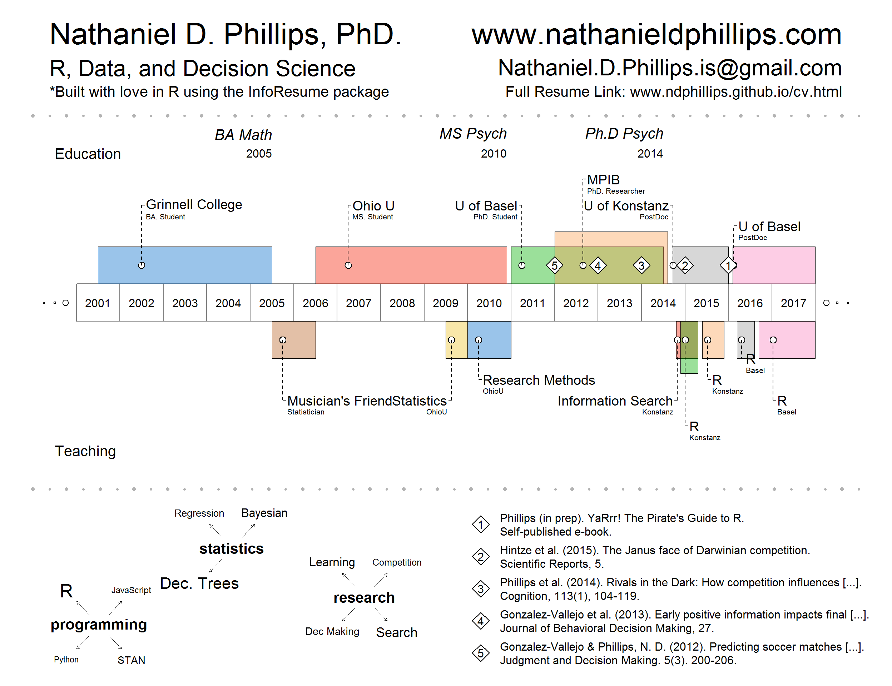

Here is my visual resume built using my VisualResume R package (see Visual Resume R Package).

Phillips, N. D., Neth, H., Woike, J., & Gaissmaier W. (under review). FFTrees: An R package to create, visualise, and use fast and frugal decision trees.
Phillips, N. (2017). YaRrr! The pirate’s guide to R. APS Observer, 30.3. PDF
Hintze, A., Phillips, N. & Hertwig, R. (2015). The Janus face of Darwinian competition. Scientific Reports, 5. PDF
Phillips, N. D.,Hertwig, R., Kareev, Y., & Avrahami, J. (2014). Rivals in the dark: How competition influences search in decisions under uncertainty. Cognition, 133(1), 104-119. PDF
González Vallejo, C., Cheng, J., Phillips, N. D., Chimeli, J., Bellezza, F., Harman, J., & Lindberg, M. J. (2013). Early Positive Information Impacts Final Evaluations: No Deliberation‐Without‐Attention Effect and a Test of a Dynamic Judgment Model. Journal of Behavioral Decision Making, 27(3), 209-225. PDF
González-Vallejo, C. & Phillips, N. D. (2010). Predicting soccer matches: A reassessment of the benefit of unconscious thinking. Judgment and Decision Making, 5(3), 200-206. PDF
Lassiter, G. D., Lindberg, M. J, Gonzalez-Vallejo, C., Bellezza, F. S., & Phillips, N. D. (2009). The deliberation-without-attention effect: Evidence for an artifactual interpretation. Psychological Science, 20(6), 671-675. PDF
Phillips, N. (in prep). R: The solution to (almost) all of your life’s problems. Congress for psychology students (psyKo). Schuepfheim, Switzerland.
Phillips, N. (2016). Creating R packages for research documentation. Early career judgment and decision making workshop, Basel, Switzerland. Link
Phillips, N. (2017). Simplify your life with R: From documenting and sharing data to modeling simple decision strategies. Department of Economics, Zuerich, Switzerland HTML
Phillips, N., Neth, H,. Woike, J., & Gaissmaeier, W. (2017). FFTrees: An R package to create and visualise fast and frugal decision trees. BaselR, Basel, Switzerland PDF
Phillips, N., Neth, H,. Woike, J., & Gaissmaeier, W. (2016). FFTrees: An R package to create and visualise fast and frugal decision trees. Annual meeting of the society for Judgment and Decision Making, Boston, MA. PDF
Phillips, N., Neth, H., Gaissmaeier, W., Navarro, D., Newell, B. & Rieskamp, J. (2016). Peeks and Keeps: Optional risk reinforcement learning. Annual meeting for the Deutschen Gesellschaft fuer Psychologie. Leipzig, Germany. PDF
Phillips, N., Neth, H., Gaissmaeier, W., Navarro, D., Newell, B. & Rieskamp, J. (2016). Peeks and Keeps: Optional risk decisions from experience. Annual meeting for the Society for Mathematical Psychology, New Brunswick, NJ.